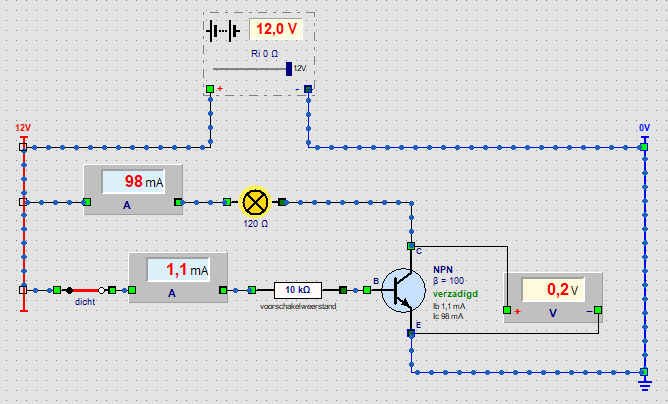

Lernpfad › Von der Energie aus › Lektion 5 von 5 · Stufe: Basis
Stellen Sie sich einen großen Hahn mit einem kleinen Steuerhahn daneben vor. Öffnen Sie den kleinen Hahn, dann drückt das bisschen Wasser den großen Hahn auf, und es fließt viel Wasser. Ein Transistor macht das mit Strom:

Vergleichen Sie mit Lektion 38: Es ist dieselbe Schaltung, aber dort laufen lange Drähte zur Quelle zurück. Hier sehen Sie auf einen Blick: Die Energie kommt links von der + Schiene, geht durch die Lampe und den Transistor und rechts über die − Schiene zurück.
Das Voltmeter rechts hängt über dem Transistor, zwischen Kollektor (C) und Emitter (E). Es misst die Spannung Uce: wie viel der 12 V im Transistor „hängen bleibt“ statt in der Lampe. Lampe und Transistor liegen hintereinander (in Reihe), also bekommen sie zusammen immer die vollen 12 V der Quelle.
| Schalter | Transistor | Voltmeter (Uce) | Lampe |
|---|---|---|---|
| offen | sperrt: ein offener Schalter | 12 V | 0 V, aus |
| geschlossen | gesättigt: ein geschlossener Schalter | etwa 0,2 V | etwa 11,8 V, leuchtet |
Mit Wasser: Ist der große Hahn zu, liegt der volle Druck der Pumpe am Hahn, und das Wasserrad bekommt nichts. Ist der Hahn ganz offen, kostet er fast keinen Druck mehr, und fast der ganze Druck geht zum Wasserrad. Aber ein wenig Widerstand bleibt immer im Hahn.
Diese 0,2 V sind der Spannungsabfall eines gesättigten Transistors: Er ist ein guter, aber kein perfekter Schalter. Ein gewöhnlicher Schalter oder ein Relaiskontakt hat fast 0 V. Der Transistor nimmt dadurch ein wenig Leistung auf und wird etwas warm: P = U × I = 0,2 V × 0,098 A ≈ 0,02 W. Das ist wenig gegenüber 1,15 W in der Lampe.
Wie viel Mal größer ist der Strom durch die Lampe als der Strom in der Basis? Warum ist das praktisch, zum Beispiel wenn ein kleiner Lichtsensor eine große Lampe einschalten soll?
Etwa 98 mA gegenüber 1,1 mA: fast 90-mal so viel. Ein schwaches Signal (ein Sensor, ein Ausgang eines Gatters) kann so einen großen Verbraucher schalten, wie mit einem Relais, aber ohne bewegliche Teile. In Lektion 40 macht ein LDR genau das.